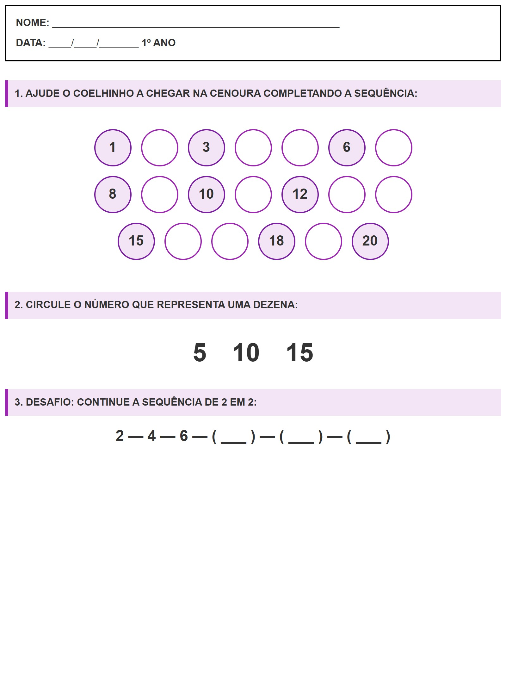

← Voltar ao Portal
NOME:
___________________________________________________
DATA:
____/____/_______
1º ANO
O Caminho dos Números
1. AJUDE O COELHINHO A CHEGAR NA CENOURA COMPLETANDO A SEQUÊNCIA:
1
3
6
8
10
12
15
18
20
2. CIRCULE O NÚMERO QUE REPRESENTA UMA DEZENA:
5
10
15
3. DESAFIO: CONTINUE A SEQUÊNCIA DE 2 EM 2:
2 — 4 — 6 — ( ___ ) — ( ___ ) — ( ___ )
Visualização da Folha de Atividade
